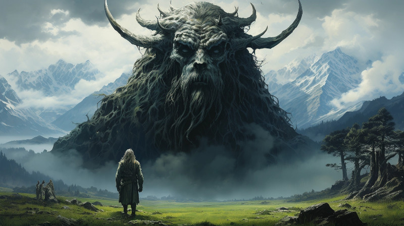

Figure 1: Oil painting of a great ancestor and a giant dipiction of Gurth, the god of the dead
The Dathakhian Empire, a realm shrouded in mystique, is a land where the Durashim—dark aelves renowned for their reverence of the dead—reign. This respect ranges from solemn honor for the deceased to profound ancestor worship, infusing their culture with a somber gravitas. Their ceremonial garb mirrors this reverence: dark, elegant attire that reflects both the solemnity of their customs and the practicality needed for their role as guardians of the realm.
Durashim mercenaries, garbed in muted tones, are a common and formidable sight along the trade routes they fiercely protect. To outsiders, their austere presence commands a mixture of fear and reverence, yet those who venture beyond preconceptions find a people of unexpected humility and hospitality.
Despite their fearsome reputation, the Durashim hold a deep-seated sense of honor and fairness. Their magicians are as respected for their wisdom as their warriors are for their prowess. In battle, they are relentless, their spells as sharp as their blades. Yet, in the quiet of their mountain homes, they are scholars and artisans, their society a tapestry woven from threads of ancient tradition and the pursuit of arcane knowledge.
The Dathakhian Empire, with its noble inhabitants, stands as a testament to the complexity of the Anashim spirit—a place where darkness and light are not foes, but dance partners in the eternal ballet of life and death.